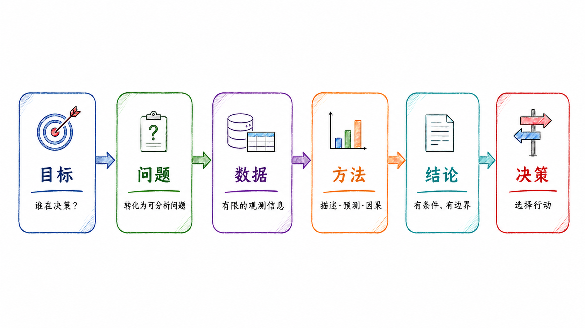
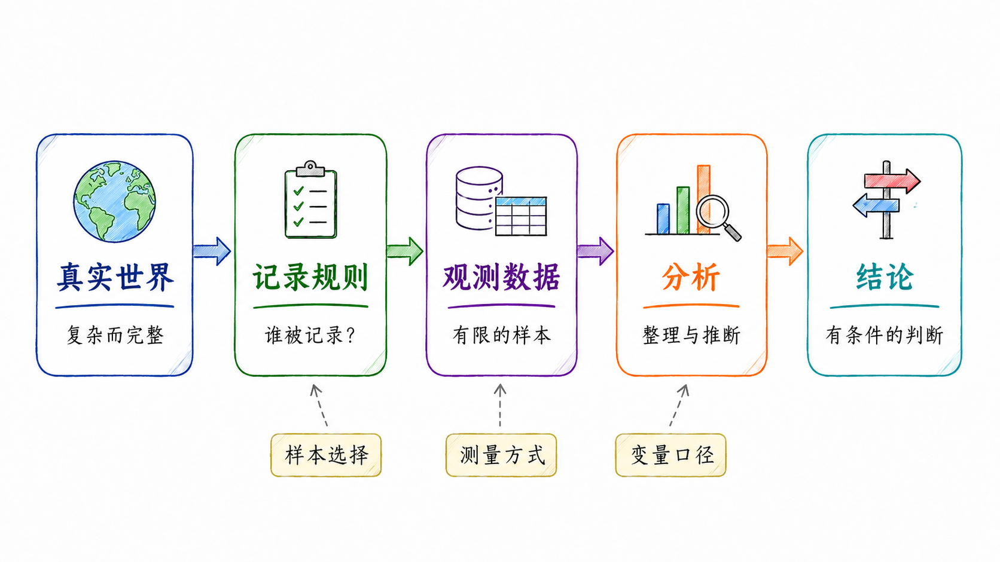
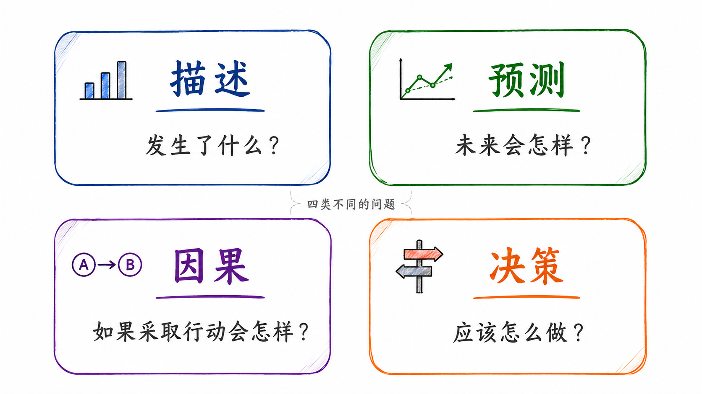
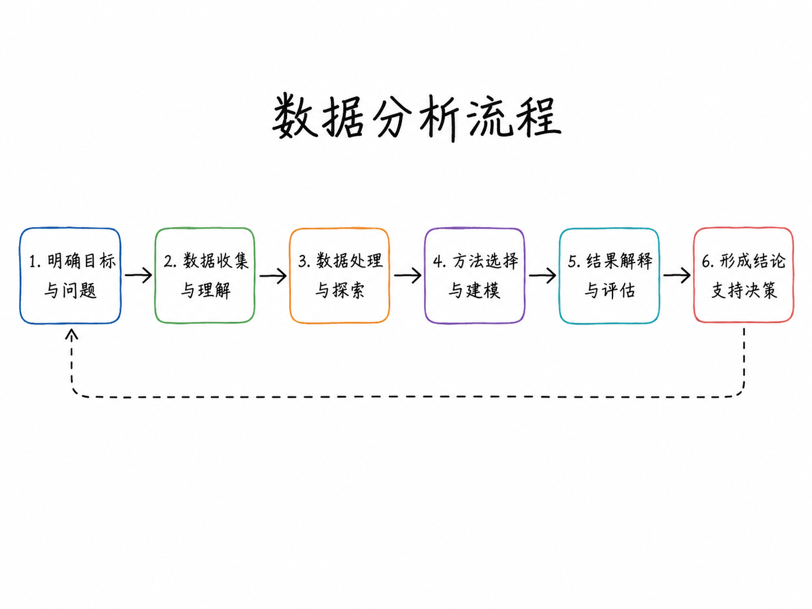
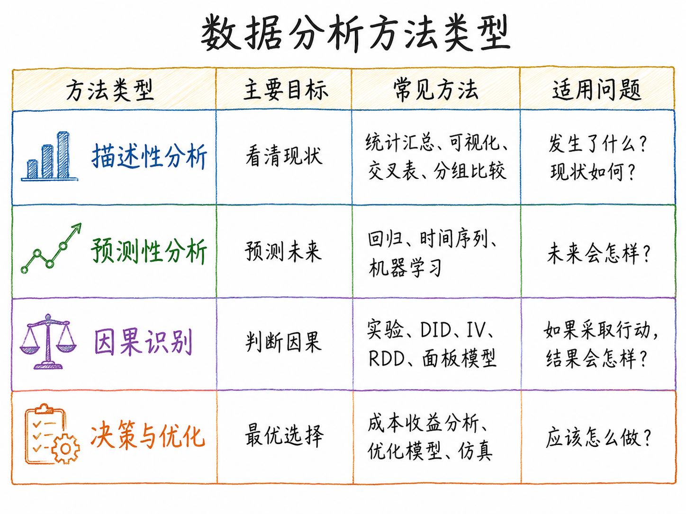
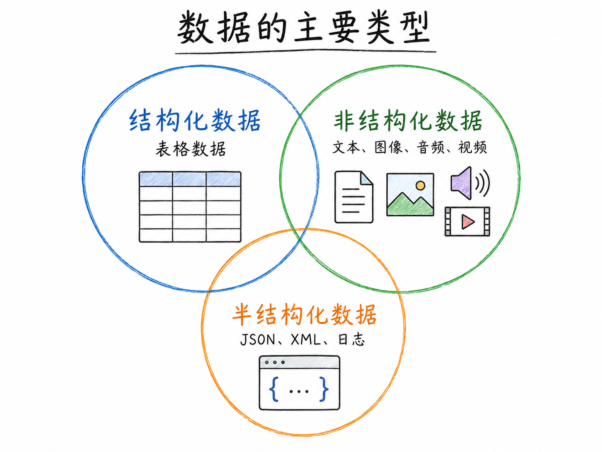
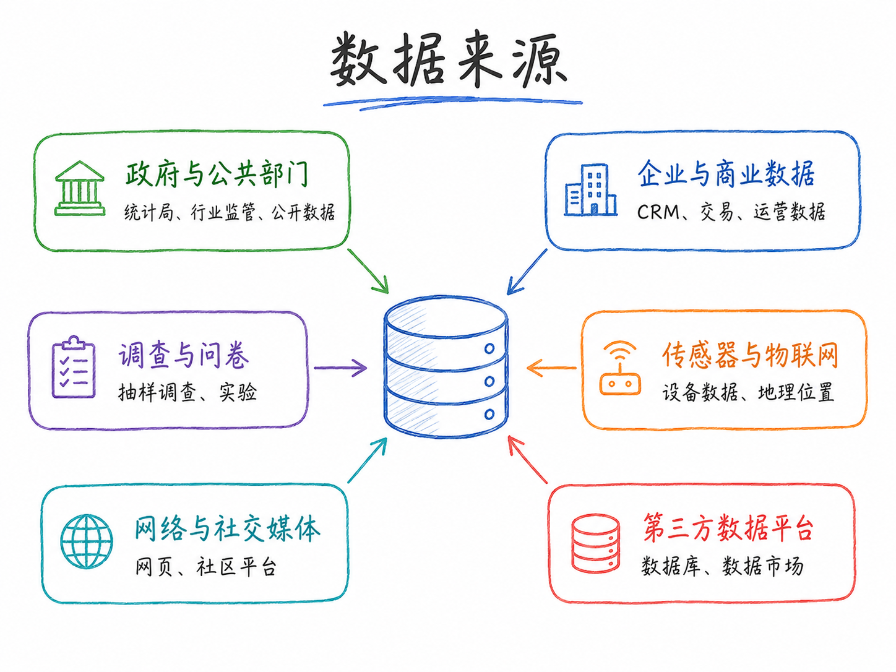

7 数据分析概览
7.1 什么是数据分析？
我们每天都在做决策：是否买房，是否投资一只股票，是否接受一份工作，是否推出一种产品，是否调整一项政策。很多时候，我们并没有充分信息，却必须做出选择。数据分析的价值，正是在这种不确定性中体现出来的。
数据分析不是从软件开始的，也不是从模型开始的。它首先要回答一个更基本的问题：
我们想通过数据分析改善什么决策？
因此，本课程中的数据分析不是单纯的 Python 代码、Stata 命令、图表制作或模型估计。它是一套围绕真实问题展开的分析流程：明确目标，寻找数据，理解数据的生成机制，选择合适的方法，解释结果，并把分析结论转化为可执行的判断。
简言之：
数据分析的起点不是数据，而是目标；数据分析的终点不是模型结果，而是决策质量。

图 Figure 7.1 展示了数据分析从目标到决策的一般逻辑。数据分析不是从「数据」开始，而是从「目标」开始。只有先明确谁在决策、为了什么决策、面对哪些约束，后续的问题界定、数据选择、方法使用和结论解释才有意义。
7.1.1 目标是第一位的
很多同学一开始接触数据分析时，容易把注意力放在工具上：用 Python 还是 Stata？用线性回归还是机器学习？画折线图还是热力图？这些问题当然重要，但它们不是第一位的。
数据分析首先要明确目标。
同样一组房价数据，不同人看到的问题完全不同。
买房者关心：现在是否适合买入？未来价格是否继续下跌？月供压力是否可控？
卖房者关心：当前挂牌价是否过高？是否应该降价？多长时间能够成交？
银行关心：抵押物价值是否充足？借款人违约风险有多大？
政府关心：房地产市场是否过冷？是否会影响金融稳定、地方财政和居民预期？
中介关心：如何促成交易？怎样给买卖双方解释价格和市场趋势？
同一份数据，因为决策主体不同、目标不同、约束条件不同，分析方法和结论也可能不同。
因此，数据分析开始之前，至少要问清楚四个问题：
谁在做决策？
他面对哪些选择？
他希望最大化或最小化什么？
错误决策的成本是什么？
这四个问题决定了后续的数据收集、变量选择、模型设定和结果解释。如果目标不清楚，后面即使模型很复杂，图表很漂亮，也可能只是形式上「很数据分析」，实质上并没有改善决策。
7.1.2 用有限数据理解未知世界
现实中的数据通常并不完美。我们拿到的数据往往是有限的、残缺的、带有偏差的。可是，决策又不能等到信息完全之后才发生。
因此，数据分析的一个基本任务，是用有限的观测信息，推断我们真正关心但无法完全观察的对象。
这些对象包括：
总体特征：例如某城市真实房价水平、某行业平均利润率、某类学生的学习效果。
潜在机制：例如房价为什么下跌，企业为什么减少投资，学生为什么缺课。
未来结果：例如未来一年房价是否继续下降，某公司是否会违约，某政策是否会带来长期影响。
因果效应：例如降低利率是否会推高房价，学校驱虫项目是否会提高出勤率，延长义务教育是否会减少青少年犯罪。
反事实状态：例如如果没有某项政策，结果会怎样；如果不买房而继续租房，家庭财富路径会怎样。
可以用一个简单框架表示：
\[ \text{Data} \rightarrow \text{Inference} \rightarrow \text{Decision} \]
这里的 Data 不是完整世界本身，而是世界的一部分记录；Inference 是从这些记录中推断未知对象；Decision 是在推断基础上采取行动。
因此，数据分析并不是机械地「让数据说话」。数据不会自动说话。数据需要放在明确的问题、合理的假设和具体的决策情境中，才有解释意义。
7.1.3 数据不是事实本身
第一讲中需要特别强调一点：数据并不等于事实本身。
数据是事实在某种制度、平台、工具或组织流程下留下的记录。理解数据，必须理解数据是如何生成的。
例如：
房产平台上的挂牌价，不等于真实成交价。
电商评论，不等于所有消费者的真实评价。
股票价格来自市场交易，但财务报表来自会计制度。
社交媒体文本反映的是愿意发声的人，不代表沉默人群。
问卷数据反映的是受访者愿意回答、能够回答以及被问到的问题。
企业数据库中的客户信息，通常只包括已经进入企业系统的人，不包括没有被企业触达的人。
可以把观测数据理解为真实世界经过一系列记录规则之后的结果：
\[ D = g(W, R, M, S) \]
其中，\(D\) 是我们观测到的数据，\(W\) 是真实世界状态，\(R\) 是记录规则，\(M\) 是测量方式，\(S\) 是样本选择机制。
这个公式的意思并不复杂：数据不是直接从真实世界「自然流出」的，而是在特定规则下被记录、筛选和加工出来的。谁被记录，谁被遗漏，变量如何定义，错误如何产生，都会影响后续分析。

图 Figure 7.2 展示了数据生成机制。观测数据不是完整的真实世界，而是经过记录规则、样本选择、测量方式和变量口径处理之后形成的有限样本。理解数据生成机制，是判断数据能否回答研究问题的前提。
这也是为什么数据分析不能只问「有没有数据」，还要问：
数据是谁记录的？
为什么会记录这些数据？
哪些对象被纳入了数据？
哪些对象被排除在数据之外？
变量的定义是否稳定？
是否存在缺失、测量误差或选择性报告？
数据是否能够服务于当前分析目标？
如果忽视数据生成机制，后续模型越复杂，误导性可能越强。
7.1.4 数据分析是降低不确定性的过程
数据分析的第二个本质，是通过收集和分析信息来降低不确定性。
这里的不确定性至少包括两类。
第一类是事实不确定性。也就是说，我们并不清楚当前真实情况是什么。
例如，在买房问题中，购房者可能不知道：
同小区真实成交价是多少？
当前挂牌价是否虚高？
卖家是否急于出售？
同片区库存有多少？
未来还有多少新增供应？
第二类是结果不确定性。也就是说，我们不知道采取某个行动之后，未来会发生什么。
例如：
如果现在买房，未来一年价格会不会继续下跌？
如果继续等待，是否会错过合适房源？
如果利率变化，月供压力会怎样？
如果收入预期下降，家庭现金流是否安全？
数据分析的作用，是把这些模糊判断转化为更有依据的条件判断。一个简单的决策框架可以写成：
\[ a^* = \arg\max_{a \in \mathcal A} E[U(a, \theta) \mid D, I] \]
其中，\(a\) 表示可选择的行动，\(\mathcal A\) 表示行动集合，\(\theta\) 表示未知状态，\(D\) 表示数据，\(I\) 表示已有信息，\(U(a,\theta)\) 表示在状态 \(\theta\) 下采取行动 \(a\) 带来的收益或效用。
这个公式的含义是：决策者并不是在完全确定的世界中选择行动，而是在已有信息和数据条件下，选择预期结果更好的行动。
因此，数据分析的核心价值不是消除所有不确定性，而是让我们更清楚地知道：
已经知道什么；
还不知道什么；
哪些判断比较稳健；
哪些结论依赖特定假设；
哪个行动在当前信息下更合理。
7.1.5 描述、预测、因果与决策
数据分析中常见的一个问题，是把不同类型的问题混在一起。事实上，描述、预测、因果和决策是四类不同任务。
它们的逻辑不同，所需数据不同，方法也不同。

图 Figure 7.3 展示了数据分析中的四类基本任务。描述回答「发生了什么」，预测回答「未来会怎样」，因果回答「如果采取行动会怎样」，决策回答「应该怎么做」。
可以进一步把这四类问题整理为下表：
| 类型 | 核心问题 | 例子 | 常用方法 |
|---|---|---|---|
| 描述 | 发生了什么？ | 某城市房价过去三年如何变化？ | 汇总统计、可视化、分组比较 |
| 预测 | 未来会怎样？ | 未来一年房价继续下跌的概率有多大？ | 时间序列、机器学习、预测模型 |
| 因果 | 如果采取某种行动，结果会怎样？ | 降低利率是否会推高房价？ | RCT、DID、IV、RDD、面板模型 |
| 决策 | 应该怎么做？ | 现在买房还是继续等待？ | 成本收益分析、风险分析、政策评价 |
这四类问题经常被混淆。
例如，知道房价过去三年下跌，是描述；根据历史数据预测未来一年房价，是预测；判断限购政策是否导致房价下降，是因果分析；决定自己是否应该买房，则是决策问题。
再比如，知道某地区青少年犯罪率上升，是描述；预测未来犯罪率是否继续上升，是预测；判断降低刑责年龄是否减少犯罪，是因果分析；决定刑责年龄应设为 14 岁还是 16 岁，则是公共决策问题。
这四类任务之间有联系，但不能相互替代。
一个预测模型可以很准，但未必能回答因果问题。一个因果估计结果显著，也不自动等于某项政策一定值得推行。决策还要考虑成本、收益、风险、伦理和执行条件。
7.1.6 数据分析的结论必须有边界
好的数据分析通常不会给出脱离条件的绝对结论。它更应该给出有条件、有证据、有边界的判断。
例如，不宜简单写成：
2026 年不适合买房。
更严谨的写法是：
在居民收入预期偏弱、二手房挂牌量较高、成交周期较长、租售比较低且家庭居住需求并不迫切的条件下，2026 年对投资型购房者可能不是理想入场时点；但对于现金流稳定、长期自住、能够获得明显折价且交易成本可控的购房者，结论可能不同。
这两种表述的差别很大。前者像一个口号，后者才是数据分析应有的结论方式。
因此，数据分析的结论至少要说明三件事：
数据支持了什么；
结论依赖哪些假设；
结论不能外推到哪里。
可以把它概括为：
\[ \text{Conclusion} = f(\text{Data}, \text{Assumptions}, \text{Method}, \text{Context}) \]
换言之，结论不是由数据单独决定的，而是由数据、假设、方法和情境共同决定的。
这也是为什么同样一组数据，不同研究者可能得出不同判断。差异不一定来自谁「不懂数据」，也可能来自分析目标不同、样本选择不同、变量口径不同、模型假设不同，或者对风险和成本的权重不同。
7.1.7 数据分析不是完全中立的
数据分析追求客观证据，但分析过程本身并不脱离立场和目标。
一个人为什么提出某个问题，为什么选择某个变量，为什么强调某个指标，为什么忽略某些成本，这些都会影响分析结论。
以「2026 年是否适合买房」为例：
买家可能更关注价格下行风险。
卖家可能更强调房源稀缺性和装修价值。
中介可能更关注成交可能性。
银行更关注抵押物安全和借款人现金流。
政府更关注市场稳定和系统性风险。
投资者更关注资产收益率、租售比和流动性。
因此，做数据分析时，一个基本训练是先问：
谁在问这个问题？他为什么问？他要用这个结论做什么？
这个问题可以帮助我们识别分析背后的目标函数。目标函数不同，最优选择自然可能不同。
数据分析不是让所有人得出同一个结论，而是让不同主体在明确目标、信息和约束条件的基础上，更清楚地知道自己的判断依据和风险边界。
7.1.8 AI 时代的数据分析能力
在 AI 和 Agent 时代，数据分析的工作方式正在发生变化。过去，很多时间花在找资料、写代码、改报错、画图和整理报告上。现在，AI 可以帮助我们更快地完成这些任务。
例如，AI 可以帮助学生：
拆解开放性问题；
搜索可能的数据来源；
解释变量含义和数据口径；
生成 Python 或 Stata 代码；
修改代码报错；
绘制初步图表；
整理文献和报告结构；
作为反方审查员检查结论漏洞。
但是，AI 降低的是操作门槛，不是判断门槛。
学生仍然必须自己判断：
问题是否定义清楚；
数据是否可信；
变量是否合适；
模型是否回答了原问题；
结论是否过度外推；
AI 给出的事实是否经过核验；
代码是否真正运行；
图表是否正确表达了数据。
因此，本课程鼓励使用 AI，但不鼓励把 AI 当成答案生成器。AI 更适合作为协作工具，而不是替代学生完成判断的工具。
可以把 AI 在本课程中的定位概括为：
AI 可以加速分析，但不能替代判断。
或者更具体地说：
AI 可以帮助我们更快地完成资料搜集、代码生成、图表制作和报告整理，但问题意识、数据判断、模型选择和结论责任仍然属于人。
这也是为什么本课程后续作业会要求同学记录 AI 使用过程，包括提示词、AI 输出、人工修改、错误核验和最终判断。我们关心的不只是最后的答案，还关心答案是如何产生的。
7.1.9 小结
本节的核心观点可以概括为三句话。
第一，数据分析的起点不是数据，而是目标。只有明确谁在决策、为了什么决策、面对哪些约束，数据和模型才有方向。
第二，数据不是事实本身，而是事实在特定记录规则、测量方式和样本选择机制下留下的观测结果。理解数据生成机制，是理解数据分析的前提。
第三，数据分析的目的不是给出一个脱离条件的确定答案，而是在有限信息下形成更有证据、更有边界、更有可解释性的判断，并最终服务于决策。
7.2 数据分析如何帮助决策？
前面已经说明，数据分析的目标不是「算出一个结果」，而是在有限、残缺、有偏的数据条件下，帮助我们更好地理解事实、识别机制、预测结果，并在不确定性中做出更合适的行动选择。
本节通过几个案例说明：同样是数据分析，不同问题对应的目标函数、数据来源、识别策略和结论边界完全不同。

图 Figure 7.4 展示了一个较为完整的数据分析流程。实际分析往往不是严格线性的，而是在「问题界定—数据获取—方法选择—结果解释」之间反复迭代。
7.2.1 刑责年龄的确定：14 岁还是 18 岁？
刑责年龄是一个很适合放在数据分析导论中的公共政策案例。它表面上是一个法律问题，实质上涉及犯罪控制、教育矫治、社会成本、受害者保护和未成年人长期发展。
讨论这个问题时，首先要区分两个概念：
最低刑事责任年龄：未成年人达到什么年龄之后，才可能进入刑事责任体系。
少年司法管辖年龄上限：一个人到多少岁之前，仍然优先由少年司法体系处理，而不是直接进入成人刑事司法体系。
因此，「14 岁还是 18 岁」不是一个简单的年龄选择，而是两类制度设计：
是否要把更低年龄段的严重违法行为纳入刑事责任范围？
是否要把 16、17 岁，甚至更高年龄段的青年继续纳入少年司法体系？
不同国家和地区的政策方向并不完全一致。有些改革强调降低特定严重犯罪的追责年龄，有些改革则强调把更多青少年留在少年司法体系中，避免过早进入成人刑事司法体系。
从数据分析角度看，这个问题至少包含三类机制。
第一类机制是威慑。如果处罚概率和处罚强度上升，潜在违法者可能因为预期成本上升而减少犯罪行为。这个逻辑来自犯罪经济学的基本思路：个体行为受到收益、成本和被处罚概率的共同影响。
第二类机制是失能。如果违法者被羁押、管束或接受封闭式矫治，他在特定时期内再次犯罪的机会会减少。这种机制不一定改变其长期偏好，但会改变其短期可行动空间。
第三类机制是教育和矫治。未成年人仍处在身心发展阶段。一个制度如果能通过教育、心理干预、家庭支持和社区矫正降低再犯概率，就可能在长期产生更高的社会收益。
问题的困难在于，这三类机制可能方向不同。更严厉的刑罚可能在短期内减少部分犯罪，但也可能损害教育完成、就业机会和社会融入，从而提高长期再犯风险。相反，教育矫治的短期威慑可能不强，但可能改善长期人力资本和社会关系。
因此，刑责年龄的确定不是简单比较「宽」和「严」，而是要比较不同制度安排的长期净效果。我们关心的结果变量也不应只包括当期犯罪率，还应包括：
再犯率；
高中或大学完成率；
成年后就业状况；
成年后犯罪记录；
受害者损失；
家庭和社区影响；
司法系统成本；
社会安全感。
如果把这个问题转化为数据分析问题，可以这样表达：
在其他条件尽可能可比的情况下，降低或提高刑责年龄，会如何影响青少年犯罪、再犯、教育、就业和长期社会成本？
这个案例可以帮助我们理解：公共政策分析不能只停留在情绪和立场上。数据分析的作用，是把争议性问题转化为可观察、可比较、可检验的问题。
课堂讨论时，可以引导学生思考：
如果降低刑责年龄后，短期犯罪率下降，但长期再犯率上升，这项政策是否成功？
如果少年司法体系成本更高，但能显著降低成年后犯罪率，是否值得投入？
如果政策对初犯和累犯的影响不同，是否应该采用分层制度？
如果教育和社区干预也具有「失能」作用，是否应把学校、家庭和司法系统放在同一个分析框架中？
这一案例的重点不是让学生立即回答刑责年龄应该是多少，而是训练他们识别政策问题背后的目标、机制、数据和长期后果。
7.2.2 肯尼亚学校的驱虫药项目：外部性、随机实验与政策评价
肯尼亚学校驱虫药项目是发展经济学和政策评价中非常经典的案例。这个案例之所以重要，是因为它不仅展示了随机实验如何帮助识别政策效果，还说明了外部性、长期追踪和成本收益分析为什么重要。
研究背景是：肠道寄生虫感染会影响儿童健康、营养吸收和上学情况。对儿童进行驱虫治疗，可能改善健康，也可能提高出勤率。但这个问题并不只是「服药儿童是否受益」这么简单，因为寄生虫具有传染性。
一个儿童接受治疗后，周围儿童的感染风险也可能下降。也就是说，驱虫药项目存在正外部性。
这会带来一个重要问题：如果我们只比较服药儿童和未服药儿童，可能会低估项目的真实社会收益。因为未服药儿童也可能因周围儿童接受治疗而间接受益。
在传统因果推断中，我们通常希望一个人的处理状态不影响另一个人的潜在结果。但在传染病、教育、网络、社区治理等场景中，这一条件经常不成立。一个人的处理会影响他人的结果，这就是外部性或溢出效应。
可以用一个简单框架表示：
\[ \text{Policy Effect} = \text{Direct Effect} + \text{Spillover Effect} \]
在驱虫药项目中，直接效应是服药儿童本人的健康和出勤变化；溢出效应是同校或邻近学校儿童因传染风险下降而获得的收益。
这个案例至少可以从四个角度理解。
第一，为什么不能只看个体效果？
如果驱虫药能降低传播风险，那么一个学生是否受益，不仅取决于自己是否服药，也取决于周围同学是否服药。因此，个体层面的随机分组可能无法完整估计项目的社会收益。
第二，为什么要考虑学校层面的随机化？
由于传染和学校环境密切相关，以学校为单位进行干预，能够更好地捕捉集体环境变化带来的影响。这样不仅可以估计接受治疗学校学生的变化，还可以观察邻近学校是否出现外溢收益。
第三，为什么政策结论不只是「有没有效果」？
如果一个项目存在强外部性，个体支付意愿可能低估社会收益。也就是说，即使某些家庭不愿意自己付费购买驱虫药，社会层面仍然可能有理由免费提供或补贴提供。
第四，为什么要追踪长期效果？
短期结果可能只体现为健康和出勤变化，但长期结果可能体现在教育完成、劳动收入、职业选择和家庭生活上。公共政策评价如果只看短期指标，可能低估儿童健康投资的真实价值。
这个案例可以总结为：
\[ \text{Health Intervention} \rightarrow \text{School Attendance} \rightarrow \text{Human Capital} \rightarrow \text{Long-run Outcomes} \]
需要注意的是，驱虫药项目也提醒我们：好的数据分析不只是估计一个平均处理效应。我们还要理解政策作用机制、干预对象、外部性范围、长期收益和成本收益关系。
课堂讨论时，可以让学生思考：
如果控制组也因为外部性而受益，传统处理效应会如何变化？
如果考试成绩短期没有显著改善，但出勤率提高，是否说明项目无效？
如果项目长期提高了劳动收入，是否应该把它视为教育政策、卫生政策，还是发展政策？
如果一个政策存在外部性，免费发放是否比让家庭自费更合理？
这个案例适合引导学生理解：数据分析不是单纯比较两组均值，而是围绕机制、外部性和长期后果形成政策判断。
7.2.3 日本失去的十年、二十年、三十年：繁荣、泡沫与长期调整
日本经济的长期停滞，是理解宏观经济、房地产周期、资产价格泡沫和政策应对的经典案例。它也可以帮助我们理解为什么判断「现在是否适合买房」不能只看一两个月的房价变化，而要放在更长周期中分析。
1970 年代到 1980 年代前期，日本制造业和出口部门快速发展。汽车、电子、机械等产业在全球市场中竞争力很强，日本经济呈现出较高增长、较强出口和较高企业投资的特征。
1985 年广场协议之后，日元快速升值，日本出口部门面临压力。为了缓冲升值对经济的冲击，日本采取了较为宽松的货币和财政政策。低利率、信用扩张、土地抵押融资和乐观预期共同推动了 1980 年代后期的资产价格泡沫。

图 Figure 7.5 概括了日本从出口繁荣、广场协议、资产价格泡沫到泡沫破裂和长期调整的主要阶段。这个案例的重点不是简单类比其他国家，而是帮助我们理解资产价格、信贷、政策和实体经济之间的联动。
资产泡沫形成过程中，房地产和股票价格上涨会提高抵押品价值，抵押品价值上升又会扩大信贷供给，信贷扩张进一步推高资产需求和价格。这种正反馈可以用一个简单链条表示：
\[ P \uparrow \Rightarrow Collateral \uparrow \Rightarrow Credit \uparrow \Rightarrow Demand \uparrow \Rightarrow P \uparrow \]
其中，\(P\) 表示资产价格，\(Collateral\) 表示抵押品价值，\(Credit\) 表示信贷供给，\(Demand\) 表示资产需求。
这个公式不是为了精确刻画所有机制，而是帮助我们理解：资产价格上涨并不总是来自基本面改善，也可能来自价格、抵押品和信贷之间的相互强化。
1990 年前后，日本资产价格开始下跌。房地产和股票价格下跌后，企业资产负债表恶化，银行不良贷款上升，信贷供给收缩，企业投资下降，经济进入长期低增长和低通胀状态。

图 Figure 7.6 展示了日本房地产价格长期调整的示意。正式研究中，应使用日本官方地价数据、BIS 住宅价格指数或 FRED 数据重新绘制，并注明口径、基期和数据来源。
日本案例至少可以从四个角度分析。
第一，资产价格为什么会形成泡沫？
泡沫通常不是由单一因素造成的。低利率、信贷扩张、金融监管、土地制度、企业融资结构、投资者预期和产业繁荣都可能共同发挥作用。数据分析需要区分基本面上涨和非理性繁荣。
第二，泡沫破裂为什么会影响实体经济？
房地产和股票价格下跌不仅影响投资者财富，还会影响企业抵押能力、银行资产质量和居民消费预期。资产价格冲击通过金融体系传导到投资、就业和消费，最终影响长期经济增长。
第三，为什么会出现长期调整？
如果企业、银行和居民都在修复资产负债表，经济可能进入低投资、低通胀、低增长状态。即使名义利率下降，企业也可能因为需求不足和资产负债表压力而不愿扩大投资。
第四，为什么不能机械类比？
日本经验很重要，但不能简单套用到其他国家。不同国家在人口结构、居民杠杆、银行体系、财政空间、产业竞争力、城市化阶段和政策工具方面差异很大。比较历史经验时，既要看相似性，也要看差异性。

图 Figure 7.7 概括了资产泡沫破裂后可能影响实体经济和民生的若干渠道。资产价格下跌本身不是全部问题，关键在于它如何通过金融体系、企业投资、居民财富和就业预期传导到真实经济。
这个案例可以和前面的买房问题联系起来。判断某个城市当前是否适合买房，不能只看某套房源是否便宜，也不能只看当前利率是否较低。更重要的是要分析：
房价是否偏离收入和租金基本面；
信贷扩张是否支撑了此前价格上涨；
居民杠杆和现金流是否安全；
人口、就业和收入是否支持长期需求；
当前挂牌价和成交价是否分化；
政策是否有足够空间缓冲调整；
买房是自住、改善，还是投资。
日本案例的教学意义在于，它提醒我们：经济决策不能只看眼前价格，也要看长期周期、资产负债表和制度环境。
7.3 数据分析的一般流程
前面几个案例说明，数据分析不是一个简单的技术动作，而是一套从目标到决策的完整流程。不同问题的细节不同，但基本步骤具有共通性。
7.3.1 明确目标
数据分析首先要明确目标，而不是直接寻找数据或套用模型。
需要回答的问题包括：
谁要做决策？
面对哪些行动选项？
决策目标是什么？
时间范围是什么？
错误决策的成本是什么？
例如，「2026 年是否适合买房」这个问题太宽泛。它至少要进一步明确：
是哪个城市？
是自住、改善还是投资？
是新房还是二手房？
是短期持有还是长期持有？
家庭现金流和融资约束是什么？
只有目标明确，后续数据和方法才有方向。
7.3.2 界定问题
开放性问题通常不能直接分析，需要转化为可操作的问题。
例如：
2026 年是否适合买房？
可以转化为：
在广州某片区，预算 1600 万左右、长期自住、现金流稳定、可接受一定价格波动的购房者，是否应该在 2026 年买入一套二手改善型住房？
经过转化后，问题变得更具体，也更容易设计数据收集方案。
7.3.3 寻找数据
数据来源可以包括官方统计、商业数据库、平台数据、实地调研、专家访谈和文本资料。不同数据来源有不同优缺点。
例如，房价分析可以使用：
官方房价指数；
小区历史成交记录；
当前挂牌价；
中介带看和成交反馈；
银行贷款利率；
人口和收入数据；
周边配套和交通信息；
实地看房记录。
数据来源越多，并不一定意味着分析越好。关键在于这些数据是否能够服务于当前问题。
7.3.4 理解数据生成机制
拿到数据之后，不应急于建模。我们需要先理解数据是如何生成的。
例如：
平台挂牌价可能高于真实成交价；
成交价数据可能缺少未成交样本；
问卷数据可能存在主观偏差；
企业财务数据受到会计准则影响；
社交媒体数据反映的是愿意发声的人群；
官方统计数据有稳定口径，但可能频率较低、颗粒度较粗。

图 Figure 7.8 概括了数据分析中常见的偏误来源。数据质量问题并不总是可以通过复杂模型解决，很多时候需要回到数据生成机制本身。
7.3.5 清洗和整理数据
数据清洗包括：
处理缺失值；
识别异常值；
统一变量口径；
合并不同来源数据；
调整时间频率；
构造分析变量；
保留处理日志。
数据清洗不是低级工作。很多实证分析的质量差异，恰恰来自变量定义、样本筛选和数据处理过程。
7.3.6 描述性分析
在建模之前，应该先做描述性分析。描述性分析的目的不是炫耀图表，而是理解数据结构。
常见问题包括：
样本有多大？
变量分布如何？
是否存在极端值？
时间趋势是否明显？
分组差异是否显著？
变量之间是否存在初步相关关系？
描述性分析可以帮助我们发现数据问题，也可以帮助我们形成初步假设。
7.3.7 选择分析方法
方法选择要服从问题类型。不同问题不能用同一种方法简单替代。

图 Figure 7.9 概括了常见数据分析方法的类型。方法本身没有高低之分，关键是它是否匹配研究问题和数据条件。
如果目标是描述现象，可以使用汇总统计、分组比较和可视化。
如果目标是预测未来，可以使用时间序列模型、机器学习模型或组合预测方法。
如果目标是识别因果效应，则需要考虑实验、准实验、工具变量、断点回归、双重差分或面板模型等方法。
如果目标是形成决策建议，还需要进一步考虑成本、收益、风险、约束和执行条件。
7.3.8 解释结果
模型结果不是分析的终点。真正重要的是解释结果。
解释结果时需要回答：
结果是否符合经济直觉？
估计量或预测结果的含义是什么？
结果在统计上是否显著？
结果在经济上是否重要？
结论对样本、变量和模型是否敏感？
是否存在替代解释？
结论适用于哪些场景？
7.3.9 形成决策建议
最后，数据分析要回到决策。
一个好的决策建议通常包括：
主要结论；
支持证据；
关键假设；
风险提示；
适用边界；
可执行行动。
例如，不应简单写成「现在可以买房」或「现在不能买房」。更好的写法是：
如果购房目的是长期自住，家庭现金流稳定，房源价格相对同类成交有明显折价，且能接受未来两三年价格继续波动，那么可以考虑进入实质谈判；如果购房目的是短期投资，且需要较高杠杆，则应更加谨慎。
这样的结论才真正服务于决策。
7.4 数据类型、数据来源与数据平台
数据分析的对象已经远远不限于传统表格。随着数字经济、平台经济和 AI 工具的发展，我们可以使用的数据形态越来越丰富，数据来源也越来越多样。
7.4.1 数据类型
从形态上看，常见数据可以分为四类。

图 Figure 7.10 展示了常见数据类型。现实分析中，很多项目并不只使用一种数据，而是把结构化数据、文本数据、图像数据和行为数据结合起来。
第一类是结构化数据。这类数据通常以表格形式存在，变量和观测单位比较清楚。例如财务报表、交易记录、问卷数据、宏观经济数据和面板数据。
第二类是半结构化数据。这类数据具有一定结构，但不一定直接表现为规范表格。例如网页、JSON 文件、XML 文件、API 返回结果和日志数据。
第三类是非结构化数据。这类数据没有固定表格结构，例如新闻、公告、研报、论文、图片、音频和视频。
第四类是多模态数据。这类数据同时包含文本、图像、位置、时间、行为轨迹等多种信息。例如一条电商记录可能同时包含商品图片、标题、评论文本、价格、点击量和交易时间。
不同数据类型对应不同处理方法。结构化数据适合使用传统统计和计量方法；文本数据需要自然语言处理；图片和视频需要计算机视觉；多模态数据则需要把不同信息来源放在统一框架中处理。
7.4.2 数据来源
从生成机制看，数据可以来自不同机构和场景。

图 Figure 7.11 展示了常见数据来源。数据平台的作用，是把分散数据源接入更稳定的分析工作流，使数据能够被代码、图表、报告和 AI-Agent 共同调用。
常见数据来源包括：
官方统计数据：国家统计局、央行、财政、海关、人口普查、地方统计年鉴等。
行政记录数据：工商注册、税务、司法裁判、专利、社保、教育、医疗等。
市场交易数据：股票、债券、基金、房地产、招聘、消费、电商等。
平台行为数据：搜索、点击、浏览、评分、评论、转发、推荐等。
实验数据：实验室实验、田野实验、A/B 测试等。
文本数据：年报、公告、政策文本、新闻报道、社交媒体内容等。
地理和遥感数据：夜间灯光、卫星影像、POI、道路网络、气候数据等。
不同数据来源有不同优势。官方统计数据权威、口径稳定，但颗粒度可能较粗；平台数据频率高、细节丰富，但可能存在样本选择和商业口径问题；商业数据库整理程度高，但成本较高，且使用范围受到授权限制；网页数据获取灵活，但稳定性和合规性需要特别注意。
7.4.3 数据平台
在实际学习和研究中，学生不仅要知道数据类型，还要知道可以从哪些平台获得数据。下面列出几类适合教学、练习和研究入门的平台。
Kaggle 适合机器学习练习、公开数据探索和 Notebook 复现。它的优势是数据、代码和讨论经常放在一起，适合学生学习完整的数据分析流程。
FRED 适合宏观经济、利率、通胀、就业、GDP、资产价格等时间序列分析。它的数据接口相对规范，适合课堂演示和宏观金融分析。
World Bank Open Data 适合国家层面的发展、贫困、人口、教育、金融、贸易和治理指标，适合做跨国比较和发展经济学案例。
OECD Data Explorer 适合发达经济体和部分新兴经济体的宏观、产业、贸易、教育、劳动和创新数据。
Hugging Face Datasets 适合文本、图像、音频和多模态数据，尤其适合自然语言处理和机器学习课程。
OpenBB 适合金融数据、宏观金融、资产价格、公司基本面和 AI-Agent 数据调用。它的价值不只是获取某个金融变量，而是把分散数据源接入 Python、API、Workspace 和 AI-Agent 等不同工作流。
中国常用数据平台 包括国家统计局、人民银行、财政部、巨潮资讯、CSMAR、Wind、同花顺 iFinD、RESSET、企查查、天眼查、AkShare 和 Tushare 等。教学中可以把它们分成官方数据源、商业数据库、开源接口和网页采集四类来介绍。
需要强调的是，数据平台降低了获取数据的成本，但不自动保证数据质量。任何数据进入正式分析之前，都必须检查：
数据口径；
样本范围；
更新时间；
缺失情况；
变量定义；
使用权限；
是否可以复现。
7.5 AI 和 Agent 如何辅助数据分析？
在 AI 和 Agent 时代，数据分析的工作方式正在发生变化。过去，学生需要自己完成资料搜索、代码编写、报错修改、图表制作和报告整理。现在，AI 可以帮助我们更快地完成其中很多步骤。
但这并不意味着数据分析变得不需要判断。恰恰相反，AI 降低了操作门槛，却提高了对问题定义、数据核验和结论审查的要求。
7.5.1 什么是 Agent？
普通聊天式 AI 更像是一次问答：
\[ Prompt \rightarrow Answer \]
Agent 则更像是一个围绕目标持续行动的系统：
\[ Goal \rightarrow Plan \rightarrow Tool \ Use \rightarrow Observation \rightarrow Revision \rightarrow Output \]
也就是说，Agent 不只是回答问题，还可以调用工具、读取文件、运行代码、访问数据源、生成图表、修改错误，并根据中间结果继续调整行动。
在数据分析中，Agent 可以承担如下角色：
问题拆解员：把开放问题拆成可分析问题。
资料侦察员：寻找可能的数据来源、变量口径和相关研究。
数据工程师：帮助写爬虫、API 调用、数据清洗和数据合并代码。
分析建模员：提出描述性分析、预测模型或因果识别方案。
反方审查员：指出样本偏误、变量口径、替代解释和模型缺陷。
报告编辑员：帮助整理图表、摘要、结论和附录。

图 Figure 7.12 展示了 AI 和 Agent 可以嵌入的数据分析决策框架。AI 可以帮助处理资料、数据和代码，但目标设定、关键判断和结论责任仍然属于人。
7.5.2 AI 可以做什么？
在本课程中，AI 可以帮助同学完成以下任务：
把开放性问题拆成可分析问题；
搜索可能的数据来源；
解释变量含义和数据口径；
生成 Python 或 Stata 代码；
修改代码报错；
绘制初步图表；
整理文献和报告结构；
生成报告初稿；
作为反方审查员检查结论漏洞。
例如，当你要分析「2026 年是否适合买房」时，可以让 AI 先帮助你完成问题拆解：
请把「2026 年是否适合买房」这个开放性问题拆解为一个可执行的数据分析任务。
要求：
1. 区分不同决策主体，例如刚需购房者、改善型购房者、投资者、银行和政府；
2. 为每类主体说明其关注的核心指标；
3. 列出可以收集的数据来源；
4. 给出可能使用的分析方法；
5. 指出这一问题中最容易被忽视的假设和风险。AI 给出的结果不能直接作为最终答案，但可以帮助我们更快地形成分析框架。
7.5.3 AI 不能替代什么？
AI 不能替代以下判断：
这个问题是否值得分析；
数据是否真实可靠；
变量定义是否合理；
模型是否回答了原问题；
结论是否超过了数据支持范围；
分析是否存在利益相关或价值立场；
最终建议是否可执行。
因此，本课程鼓励使用 AI，但不鼓励把 AI 当作答案生成器。AI 更适合作为协作工具，而不是替代学生完成判断的工具。
7.5.4 可以尝试的平台和仓库
对于希望进一步探索 AI-Agent 数据分析的同学，可以从以下方向入手。
OpenBB 适合金融数据、公司基本面、宏观变量和资产价格分析。它可以作为金融数据进入 AI-Agent 工作流的入口。
LangChain / LangGraph 适合学习工具调用、链式调用、记忆、检索增强和可控 Agent 工作流。
LlamaIndex 适合把 PDF、网页、数据库、API 和本地资料接入大语言模型，构建文献问答、知识库检索和 RAG 应用。
CrewAI 适合学习多 Agent 分工协作，例如把资料搜索、数据清洗、建模分析和报告审查分配给不同角色。
Dify / Flowise 适合编程基础较弱的同学，用可视化方式搭建 RAG、工作流和 Agent 原型。
学生不需要一开始就掌握所有工具。更合适的学习路径是：
先用 ChatGPT 或 Claude 拆解问题和生成代码；
再用 Python 或 Stata 跑通一个小型数据分析任务；
然后尝试使用 OpenBB、Kaggle 或 FRED 获取真实数据；
最后再探索 Agent 工作流，把资料、数据、代码和报告连接起来。
7.5.5 AI 使用说明
本课程作业可以使用 AI，但必须提交 AI 使用说明。说明内容包括：
使用了哪些 AI 工具；
AI 承担了哪些任务；
使用了哪些关键提示词；
哪些内容由人工修改；
哪些事实经过核验；
仍然可能存在哪些问题。
可以使用如下模板：
## AI 使用说明
本次作业使用了如下 AI 工具：
- 工具名称：
- 使用环节：
- 关键提示词：
- AI 输出的主要内容：
- 人工修改内容：
- 已核验内容：
- 仍可能存在的问题：这一要求的目的不是限制 AI 使用，而是让数据分析过程可追溯、可检查、可复现。
7.6 本讲作业
本讲作业的目标，是让同学完成一次小型的数据分析设计，而不是立即做一个复杂模型。
7.6.1 作业一：把开放问题转化为数据分析问题
请选择一个开放性经济决策问题，例如：
2026 年是否适合买房？
某个城市的房价是否已经接近底部？
某只股票近期上涨是否有基本面支撑？
某类职业的招聘需求是否在下降？
某个商圈是否适合开一家咖啡店？
要求完成以下内容：
明确决策主体；
明确行动选项；
明确核心目标；
列出至少三个关键变量；
列出至少两个可能的数据来源；
说明可能存在的数据偏误；
给出一个初步分析流程图或文字说明。
7.6.2 作业二：AI 辅助分析日志
请使用 AI 辅助完成作业一，并提交 AI 使用日志。
日志至少包括：
一条用于问题拆解的提示词；
一条用于搜索数据源的提示词；
一条用于反方审查的提示词；
AI 输出中的一个错误或不足；
你的人工修正说明。
7.6.3 作业三：数据说明表
请选择一个与你的分析问题相关的数据源，并填写数据说明表。
## 数据说明表
- 数据名称：
- 数据来源：
- 获取方式：
- 样本范围：
- 时间区间：
- 观测单位：
- 核心变量：
- 数据频率：
- 缺失值情况：
- 可能的数据偏误：
- 使用限制：7.7 本讲小结
本讲的核心观点可以概括为三点。
第一，数据分析的起点不是数据，而是目标。只有明确谁在决策、为了什么决策、面对哪些约束，数据和模型才有方向。
第二，数据不是事实本身，而是在特定记录规则、测量方式和样本选择机制下形成的观测结果。理解数据生成机制，是理解数据分析的前提。
第三，AI 和 Agent 可以显著提高数据分析效率，但不能替代人的判断。学生可以借助 AI 完成资料搜集、代码生成和报告整理，但必须自己负责问题定义、数据核验、模型选择和结论边界。
本课程后续内容将围绕这条主线展开：从数据获取、数据清洗、可视化和描述性分析开始，逐步进入回归分析、因果推断、机器学习、文本分析和 AI-Agent 辅助研究工作流。